Cinq vies, une carte fermée, et à chaque manche un tueur secret désigné parmi vous. Ce guide explique chaque phase de la partie, rôle par rôle, avec des captures réelles du jeu.
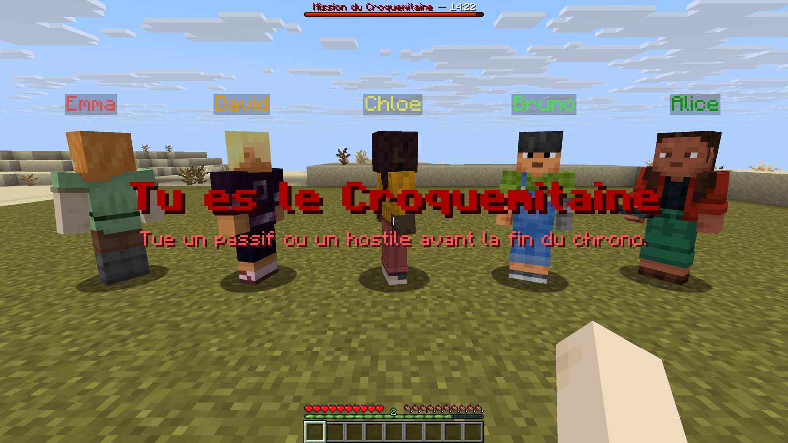
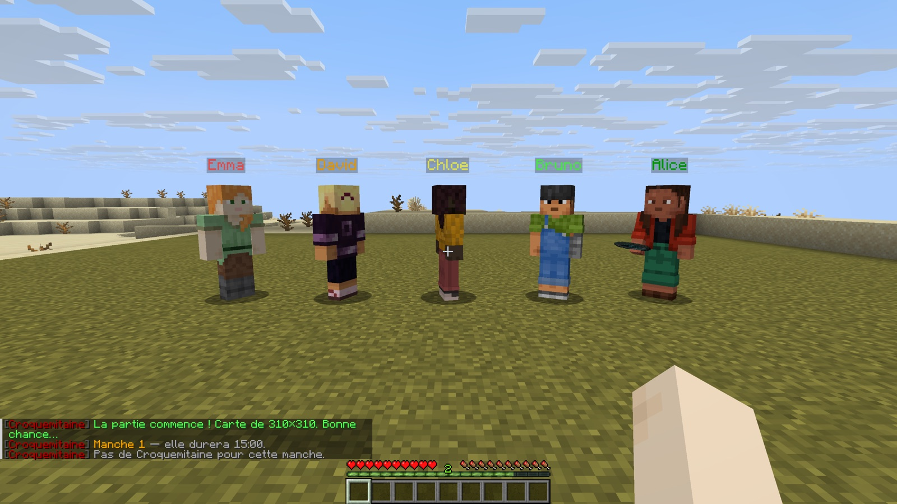
Durée des manches (réglage par défaut) : 20 min à la manche 1, puis 2 min de moins à chaque manche, sans descendre sous 6 min. Sur les captures, les durées sont raccourcies pour la démonstration.
La couleur de ton pseudo indique tes vies restantes, partout : au-dessus de ta tête, dans la liste des joueurs (touche Tab) et dans le chat.
| Vies | Couleur | Rôle |
|---|---|---|
| 5 | Vert foncé | Passif |
| 4 | Vert clair | |
| 3 | Jaune | Hostile |
| 2 | Orange | |
| 1 | Rouge | Assassin |
| 0 | Gris | Éliminé |
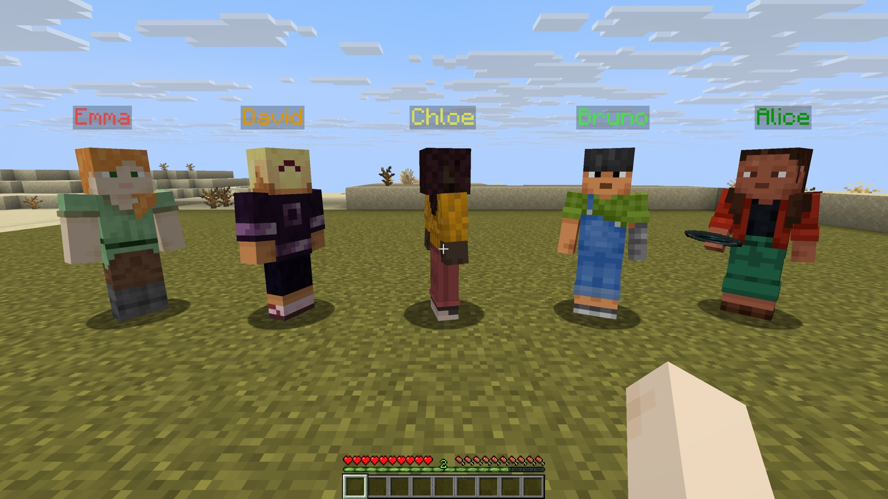
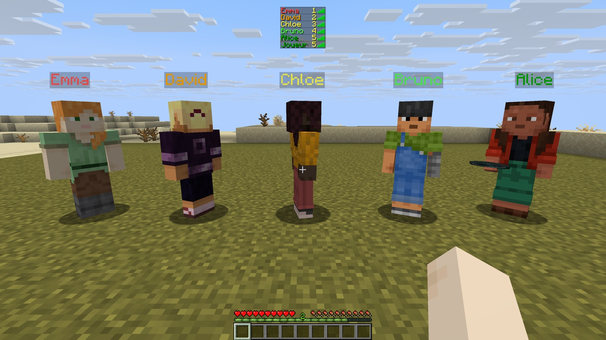
Tu gardes ton inventaire, mais tu réapparais n'importe où sur la carte : la vraie conséquence d'une mort, c'est de te perdre. La commande /death-history liste toutes tes morts : date, cause et, si un joueur est responsable, son nom (sans les coordonnées, sinon ce serait trop facile).
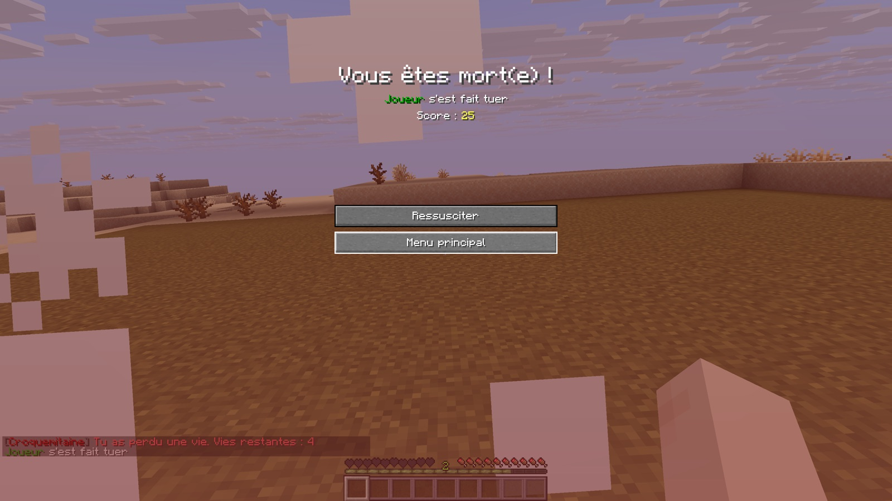
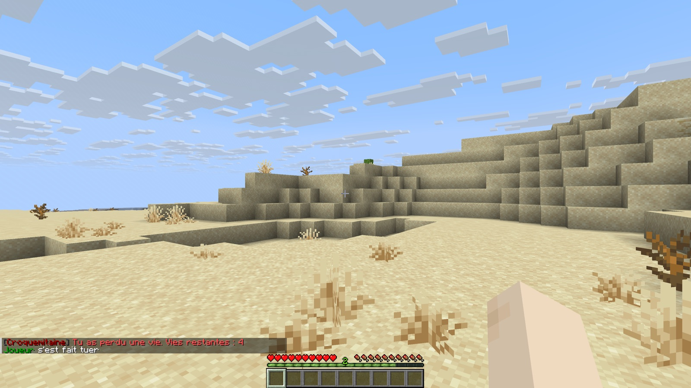
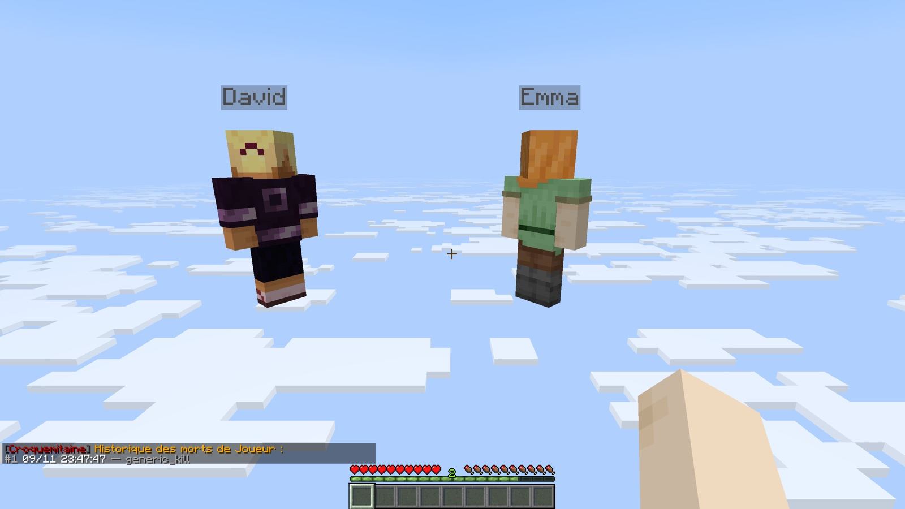
Tu n'as pas le droit de frapper les autres passifs ni les hostiles. Tu peux te défendre contre un assassin ou contre le Croquemitaine, à condition d'être à 40 blocs ou moins de lui. Cette distance limite surtout l'arc, l'arbalète et le trident.
Tu as le droit d'attaquer les passifs, mais pas les autres hostiles. Comme un passif, tu peux frapper un assassin ou le Croquemitaine à 40 blocs ou moins.
Plus rien ne te retient : tu peux frapper tout le monde. En échange, tout le monde peut se défendre contre toi. Un assassin ne peut jamais être désigné Croquemitaine.
Tu es envoyé dans une boîte aux murs invisibles, au-dessus de la carte, en mode aventure et invulnérable, et tu y retournes même après une déconnexion. Pour ne rien dévoiler aux vivants, ton chat n'est lu que par les autres éliminés, et tu es muet en vocal.
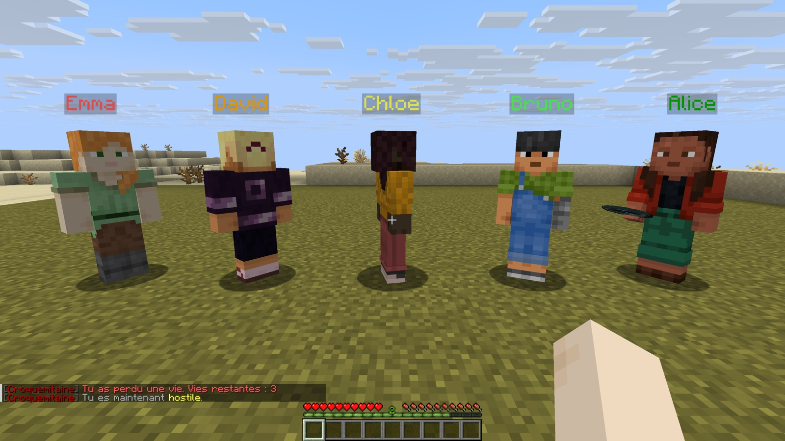
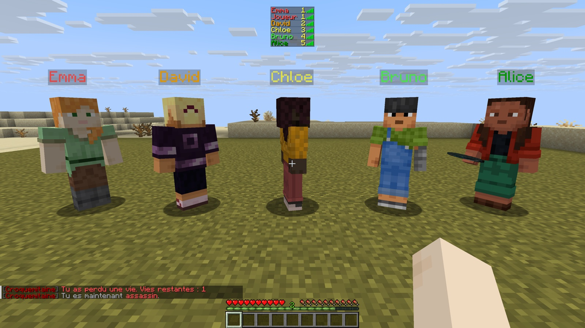
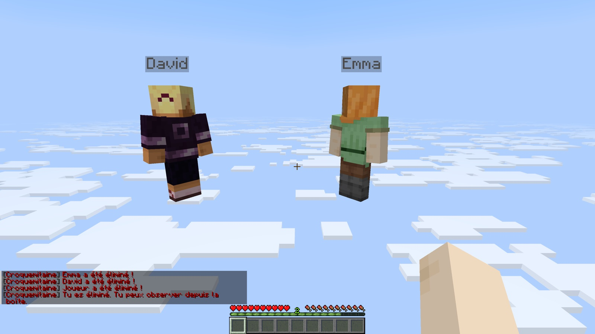
Ce tableau est une règle d'honneur pour les coups directs (épée, poing, arc…) : le jeu ne bloque rien, c'est à chacun de la respecter. Inutile de frapper tout le monde « pour voir » qui est le Croquemitaine !
| Attaquant ↓ / Cible → | Passif | Hostile | Assassin | Croquemitaine |
|---|---|---|---|---|
| Passif | Non | Non | Si ≤ 40 blocs | Si ≤ 40 blocs |
| Hostile | Oui | Non | Si ≤ 40 blocs | Si ≤ 40 blocs |
| Assassin | Oui | Oui | Oui | Oui |
| Croquemitaine | Oui | Oui | Non | — |
À partir de la manche 2, un joueur est tiré au sort parmi les passifs et hostiles connectés. Tout le monde voit la même animation, au même rythme : impossible de deviner qui a été choisi en observant les autres.
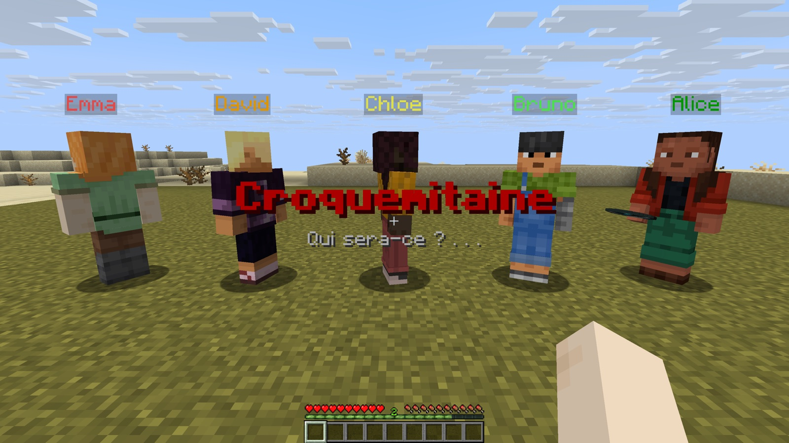
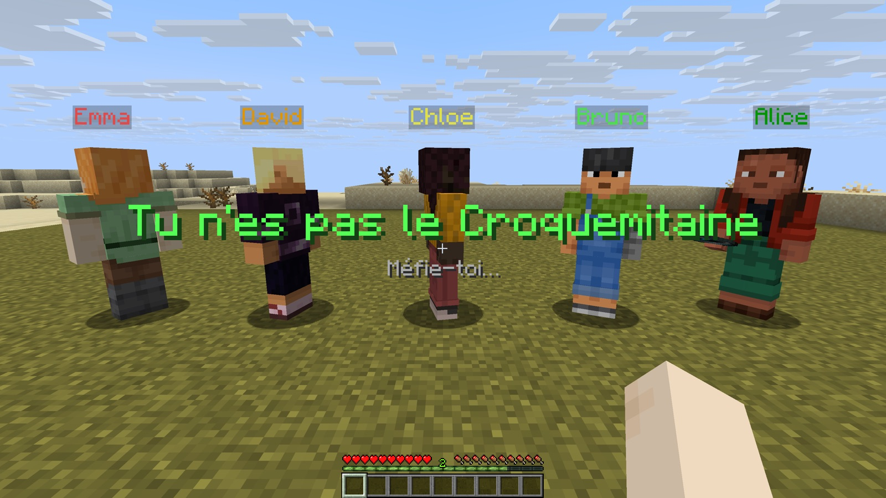
Personne d'autre ne connaît son identité, et c'est à lui de rester discret.
Juste après l'annonce s'ouvre une roulette de 2 pouvoirs tirés au hasard : tu en choisis un en cliquant dessus. Au bout de 15 s, ou si tu fermes la fenêtre, le choix est fait au hasard. Selon le mode choisi par l'organisateur, le pouvoir peut aussi être tiré directement au hasard, sans roulette.
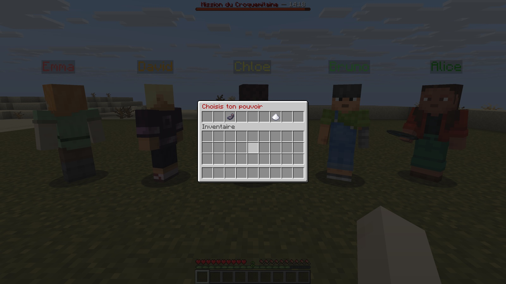
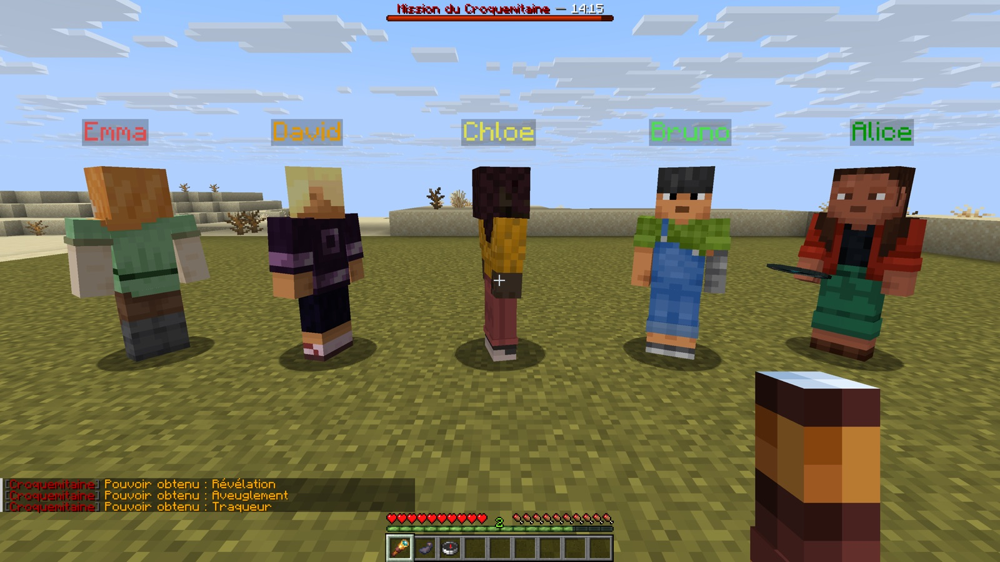
| Pouvoir | Effet | Type |
|---|---|---|
| Traqueur | Une boussole pointe vers la cible la plus proche (mise à jour toutes les 5 s). | Passif |
| Ombre | Invisibilité 20 s, armure et objet en main masqués. Recharge 2 min. | Actif |
| Prédateur | Vitesse II pendant toute la mission. | Passif |
| Brute | Force I. | Passif |
| Carapace | Résistance I. | Passif |
| Sursis | +3 min sur ton chrono (seulement le Croque qui le tire, pas en héritage). | Immédiat |
| Second souffle | Ta première mort ne fait pas échouer la mission. | Passif |
| Aveuglement | Cécité 4 s aux joueurs à 8 blocs ou moins. Recharge 90 s. | Actif |
| Saut de l'ombre | Une fois : téléportation derrière la cible la plus proche (≤ 30 blocs). | Actif |
| Morsure | Tes coups infligent Lenteur II pendant 3 s. | Passif |
| Révélation | Une fois : la cible la plus proche est signalée par des particules pendant 10 s, visibles par toi seul. | Actif |
Les pouvoirs actifs s'utilisent par clic droit avec leur item. Ces items ne peuvent être ni jetés ni rangés, et disparaissent à la fin de la mission.
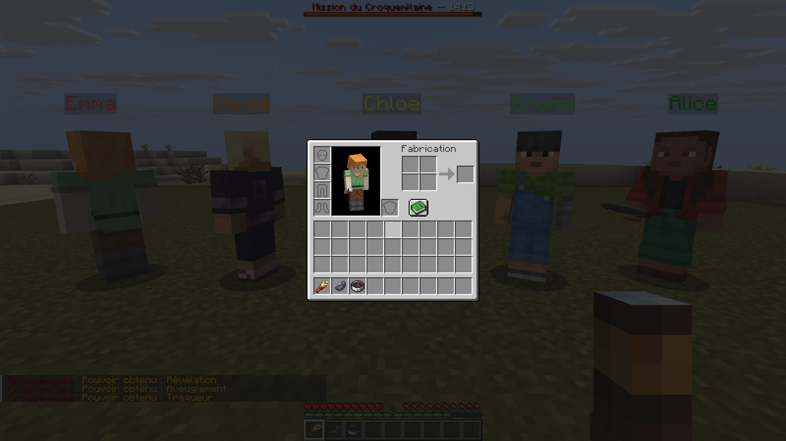
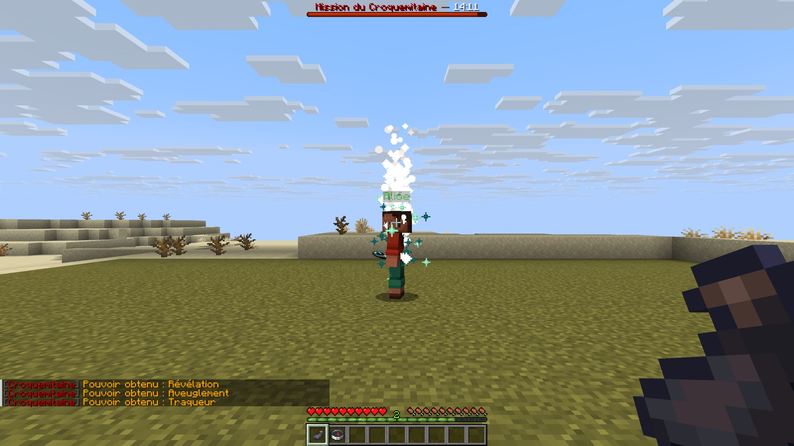
Ta mission : tuer de ta propre main un passif ou un hostile avant la fin du chrono. Coups, flèches, potions, TNT que tu as allumée, chute juste après ton coup… tout ce que tu déclenches toi-même compte.
| Situation | Conséquence |
|---|---|
| Kill réussi | Tu es libéré et tu perds tes pouvoirs, mais la manche continue jusqu'au bout du chrono, sans nouveau Croquemitaine. La mort de ta victime s'affiche dans le chat comme toutes les autres, mais rien n'indique que c'était le Croque : reste discret ! |
| Chrono écoulé | Tu perds 1 vie, la manche se termine et un nouveau Croque est tiré. |
| Tu meurs pendant la mission | Mission ratée, mais pas de vie en plus (tu as déjà perdu celle de ta mort). Nouvelle manche. |
| Tu te déconnectes | Tant pis pour toi : le chrono continue, et s'il expire, tu perds ta vie quand même. |
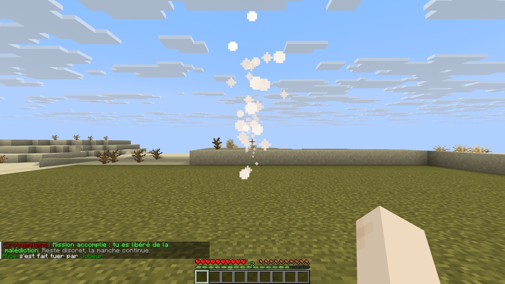
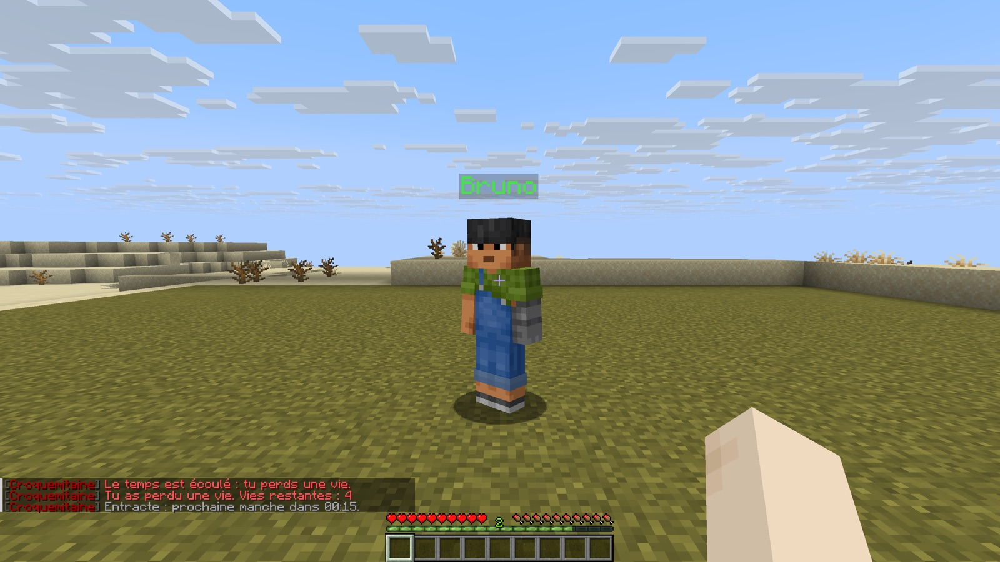
Chaque nouveau Croquemitaine reçoit tous les pouvoirs des Croques précédents de la partie, plus un nouveau. Le Croque devient donc de plus en plus fort, mais dispose de moins en moins de temps.
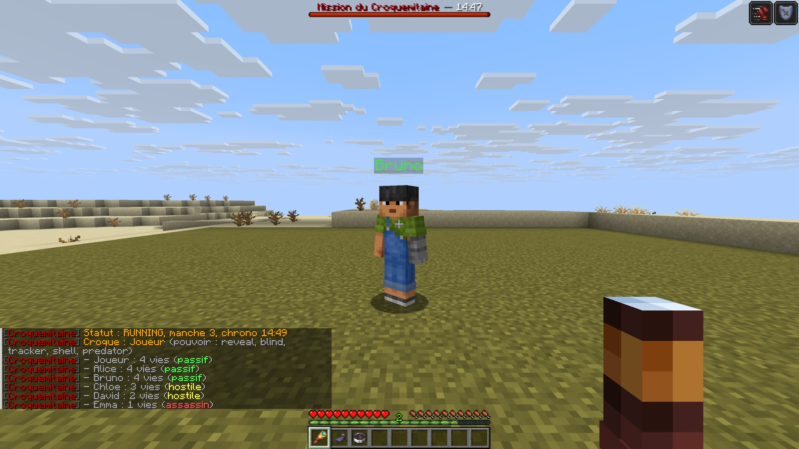
Tu ne sais pas qui il est. Quelques réflexes :
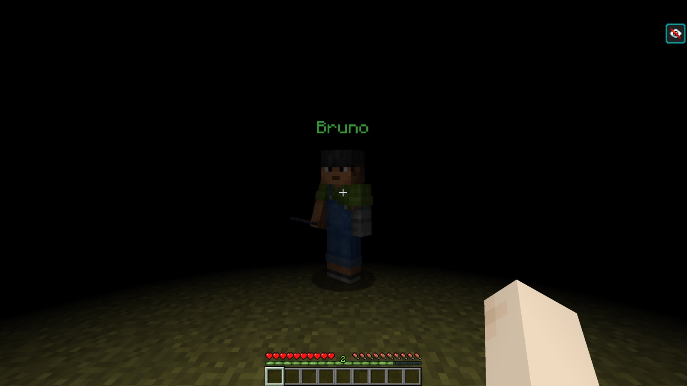
| Règle | Détail |
|---|---|
| Table d'enchantement | Impossible à fabriquer. Il n'en existe qu'une seule, au centre de la carte, incassable et résistante aux explosions. |
| Casques interdits | Tu peux mettre un casque (ou citrouille, tête…), mais tu es empoisonné (Poison II) tant que tu le portes. |
| Phantoms | Aucun phantom : tu peux rester éveillé sans risque. |
| Œufs de monstres | Tuer un monstre hostile a 25 % de chances de faire tomber l'œuf d'un autre monstre (boss exclus). C'est un monstre normal : à toi de t'en servir… ou de t'en méfier. |
| TNT simplifiée | 1 poudre à canon + 4 sable, en plus de la recette normale. |
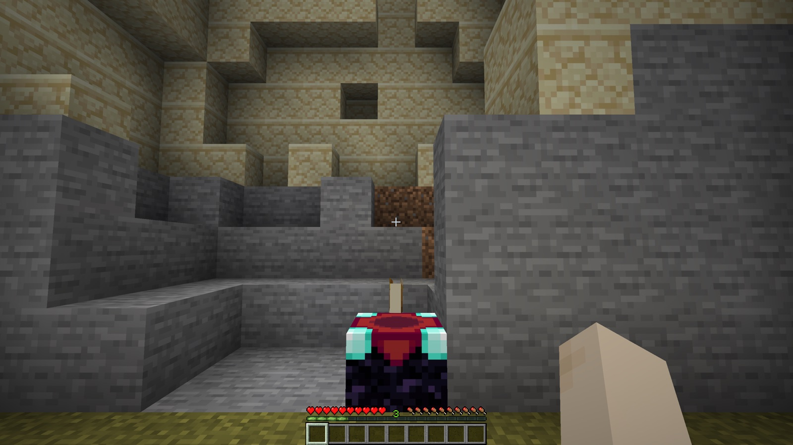
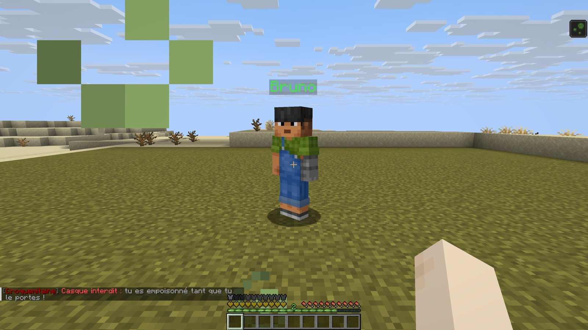
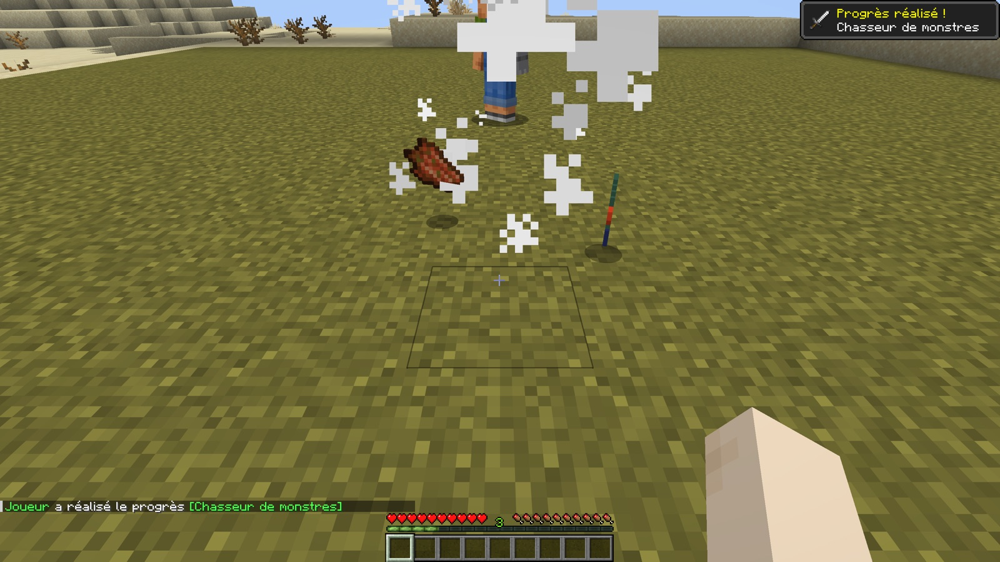
Quand il ne reste que des assassins (au moins deux), plus aucun Croquemitaine ne peut être désigné : après un court délai, la bordure se referme progressivement pour forcer l'affrontement.
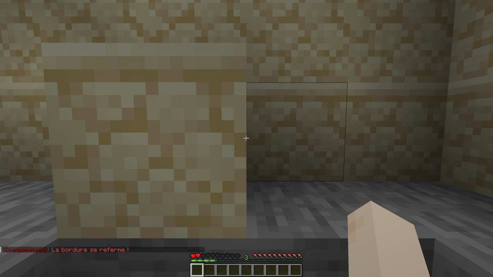
Le dernier survivant remporte la partie : annonce à tous et feu d'artifice.
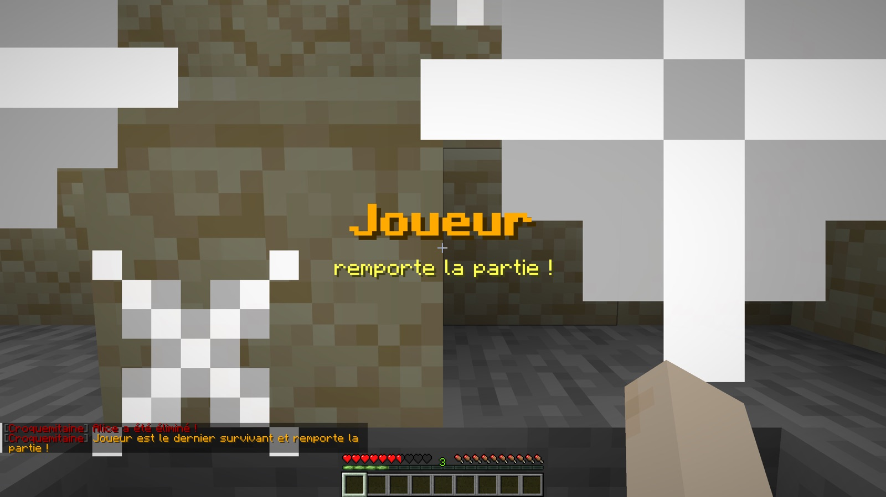
| Commande | Effet |
|---|---|
| /croque start | Lance la partie : carte, règles, table, apparition aléatoire de tous, manche 1. |
| /croque pause · resume | Gèle / reprend le chrono. |
| /croque stop | Termine la partie et nettoie tout. |
| /croque force <joueur> | Désigne le Croquemitaine de la manche. |
| /croque givepower <pouvoir> | Donne un pouvoir au Croque actuel. |
| /croque skip | Termine la manche sans pénalité. |
| /croque lives <joueur> set|add|remove <n> | Modifie les vies. |
| /croque revive <joueur> | Sort un éliminé de la boîte avec 1 vie. |
| /croque border <taille> [secondes] | Ajuste la bordure. |
| /croque status | Croque actuel, pouvoirs, chrono et vies de chacun (admins seulement). |
| /croque reload | Recharge la configuration et les messages. |
Minecraft 26.3 avec Fabric et le mod Simple Voice Chat pour le vocal de proximité (portée conseillée : environ 18 blocs, groupes désactivés).
Captures réalisées automatiquement en jeu, sur un serveur de test, avec des joueurs simulés (Alice, Bruno, Chloé, David, Emma) et des durées de manche raccourcies.